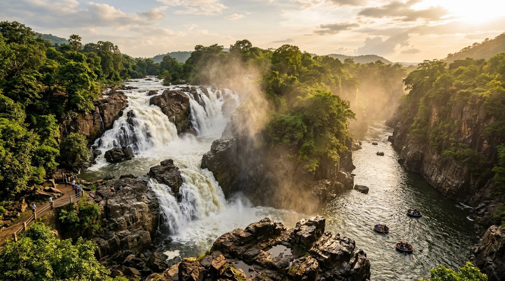
தமிழ்நாடு பல்வேறு மலைத்தொடர்கள், ஆறுகள், காடுகள் மற்றும் இயற்கை வளங்களைக் கொண்ட மாநிலமாகும். குறிப்பாக மேற்கு தொடர்ச்சி மலைகள், கிழக்குத் தொடர்ச்சி மலைகள் மற்றும் பிற மலைப்பகுதிகளில் பல அழகிய அருவிகள் உருவாகியுள்ளன.
தமிழ்நாட்டின் முக்கியமான மற்றும் பிரபலமான அருவிகளில் ஒகேனக்கல், குற்றாலம், தலையாறு, ஆகாய கங்கை, சுருளி, கும்பக்கரை, சிறுவாணி, கோவைக்குற்றாலம், கேத்தரின், பைக்காரா, மணிமுத்தாறு, பாபநாசம், திருப்பரப்பு, குட்லாடம்பட்டி மற்றும் பஞ்சலிங்கம் ஆகியவை குறிப்பிடத்தக்கவை.
குறிப்பு: இங்கு குறிப்பிடப்படும் 15 அருவிகள், இந்தப் பக்கத்தில் விரிவாகக் குறிப்பிடப்படும் முக்கியமான அருவிகளின் பட்டியல் மட்டுமே. இது தமிழ்நாட்டில் உள்ள அனைத்து அருவிகளின் மொத்த எண்ணிக்கை அல்ல.
மலைப்பகுதிகளில் சேகரிக்கப்படும் மழைநீர் உயரமான பாறைகளிலிருந்து கீழ்நோக்கி விழுவதன் மூலம் அருவிகள் உருவாகின்றன.
அருவிகளைச் சுற்றியுள்ள காடுகள், மலைகள் மற்றும் நீர்நிலைகள் பல்வேறு தாவரங்கள் மற்றும் விலங்குகளுக்கு வாழிடமாக உள்ளன.
அழகிய அருவிகள் தமிழ்நாட்டின் முக்கியமான இயற்கைச் சுற்றுலாத் தலங்களாக விளங்குகின்றன. உள்நாட்டு மற்றும் வெளிமாநில சுற்றுலாப் பயணிகளை ஈர்க்கின்றன.
அருவிகளில் இருந்து பாயும் நீர் கீழ்நோக்கிப் பாய்ந்து ஓடைகள் மற்றும் ஆறுகளுடன் இணைகிறது. இதன் மூலம் உள்ளூர் நீர்வள அமைப்புக்கு பங்களிக்கிறது.
பல அருவிகளைச் சுற்றியுள்ள பகுதிகளில் சுற்றுலா தொடர்பான கடைகள், உணவகங்கள், வழிகாட்டுதல் மற்றும் போக்குவரத்து மூலம் உள்ளூர் மக்களுக்கு வருமான வாய்ப்புகள் உருவாகின்றன.
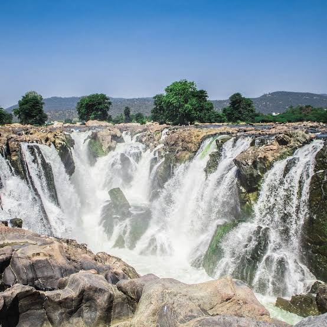
காவிரி ஆறு தமிழ்நாட்டிற்குள் நுழையும் முக்கியப் பகுதிகளில் ஒன்றான ஒகேனக்கல், அதன் பாறை அமைப்புகள் மற்றும் அருவித் தொடர்களுக்காக புகழ்பெற்றது. இங்கு நீர் பாறைகளின் மீது விழும் காட்சி மிகவும் அழகாக காணப்படுகிறது. சுற்றுலா மற்றும் உள்ளூர் பொருளாதாரத்திற்கு முக்கிய பங்கு வகிக்கிறது.
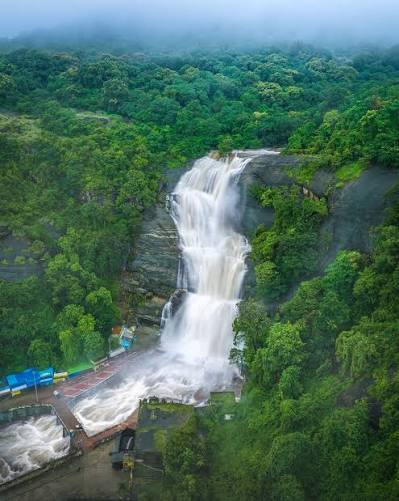
குற்றாலம் தமிழ்நாட்டின் மிகவும் பிரபலமான அருவித் தலங்களில் ஒன்றாகும். மேற்கு தொடர்ச்சி மலைப் பகுதியில் அமைந்துள்ள இப்பகுதி பல்வேறு அருவிகளைக் கொண்டுள்ளது. அருவிநீர் பல்வேறு மூலிகைத் தாவரங்கள் நிறைந்த மலைப்பகுதிகள் வழியாக வருவதால், குற்றாலம் பாரம்பரியமாக "தென்னிந்தியாவின் ஸ்பா" என அழைக்கப்படுகிறது.
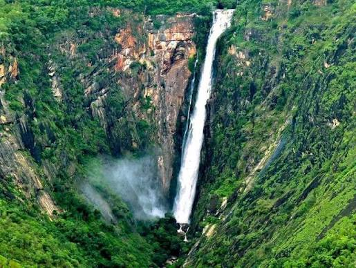
தலையாறு அருவி உயரமான பாறைச் சரிவில் இருந்து நீர் கீழ்நோக்கி விழும் அழகிய இயற்கைக் காட்சிக்காக புகழ்பெற்றது. இது கொடைக்கானல் மலைப்பகுதியின் முக்கிய இயற்கைச் சிறப்புகளில் ஒன்றாகும்.
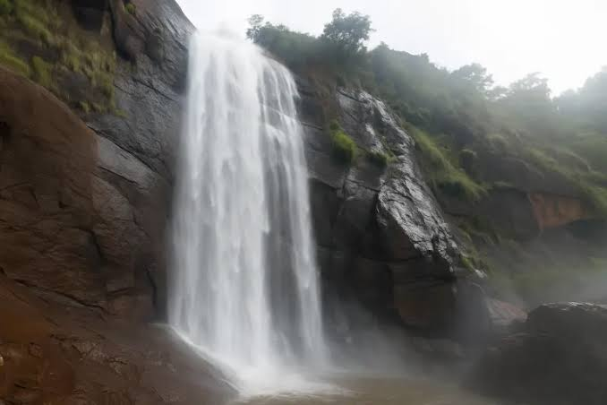
கொல்லிமலையில் அமைந்துள்ள ஆகாய கங்கை அருவி, உயரமான பாறைகளுக்கு இடையே நீர் விழும் அழகிய காட்சியைக் கொண்டது. அருவியைச் சுற்றியுள்ள மலை மற்றும் வனப்பகுதி இயற்கை அழகை மேலும் அதிகரிக்கிறது.
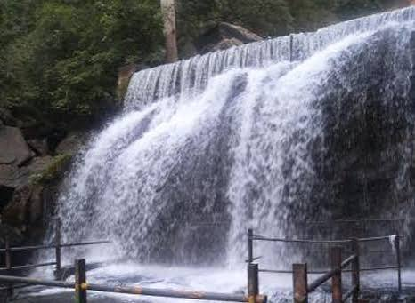
சுருளி அருவி மேற்கு தொடர்ச்சி மலைப் பகுதியில் அமைந்துள்ள அழகிய அருவியாகும். பசுமையான மலைச்சூழலும் நீர்வீழ்ச்சியும் இப்பகுதியின் இயற்கை அழகை வெளிப்படுத்துகின்றன.
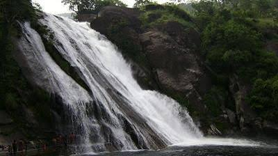
கொடைக்கானல் மலைப்பகுதியின் அடிவாரத்தில் அமைந்துள்ள கும்பக்கரை அருவி, இயற்கையான பாறை அமைப்புகளுடன் கூடிய அழகிய அருவியாகும். பாறைகளுக்கு இடையே படிப்படியாகப் பாயும் நீர் சுற்றுலாப் பயணிகளைக் கவர்கிறது.
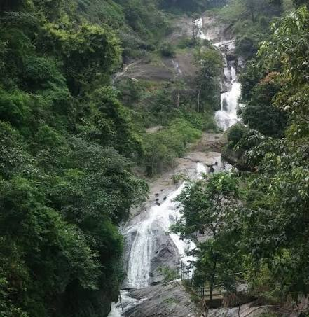
சிறுவாணி மலைப்பகுதி அதன் பசுமையான காடுகள் மற்றும் நீர்வளத்திற்காக புகழ்பெற்றது. இப்பகுதியில் காணப்படும் அருவிகள் இயற்கைச் சூழலின் முக்கிய அங்கமாக உள்ளன.
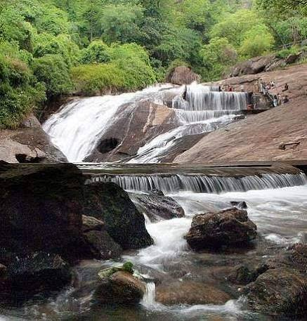
கோவைக்குற்றாலம் அருவி கோயம்புத்தூர் மாவட்டத்தின் முக்கியமான இயற்கைச் சுற்றுலாத் தலமாகும். மேற்கு தொடர்ச்சி மலைப் பகுதியின் பசுமையான சூழலுடன் இந்த அருவி அமைந்துள்ளது.
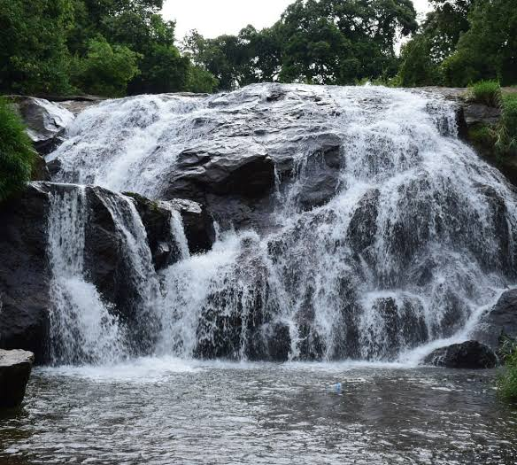
கேத்தரின் அருவி நீலகிரி மலைப்பகுதியின் முக்கியமான இயற்கைச் சிறப்புகளில் ஒன்றாகும். உயரமான மலைப்பகுதியிலிருந்து கீழ்நோக்கி விழும் நீர், சுற்றியுள்ள பசுமையான தேயிலைத் தோட்டங்கள் மற்றும் காடுகளுடன் அழகிய காட்சியை உருவாக்குகிறது.
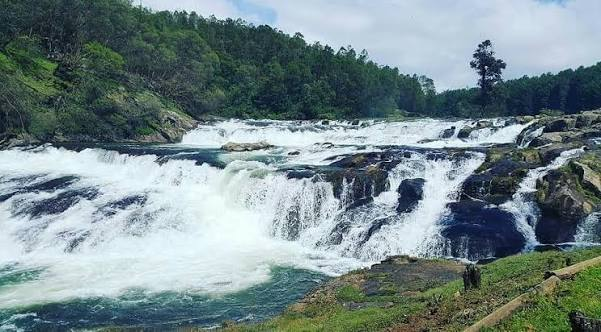
பைக்காரா நீர்வீழ்ச்சி நீலகிரி மலைப்பகுதியில் அமைந்துள்ளது. பைக்காரா ஆற்றின் நீரோட்டம் பாறைச் சரிவுகள் வழியாகப் பாய்ந்து அருவியாக உருவாகிறது.
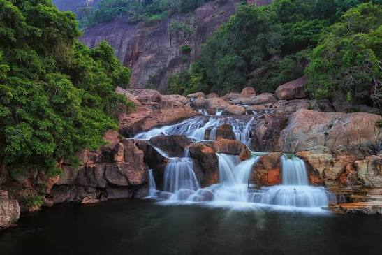
மணிமுத்தாறு அருவி மேற்கு தொடர்ச்சி மலைப் பகுதியில் அமைந்துள்ள முக்கிய அருவியாகும். மலைகள் மற்றும் அடர்ந்த பசுமை சூழலில் அமைந்திருப்பதால் இயற்கை ஆர்வலர்களை ஈர்க்கிறது.
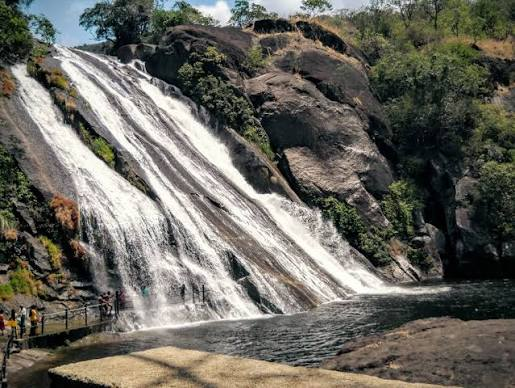
பாபநாசம் பகுதி தாமிரபரணி ஆற்றுடன் நெருங்கிய தொடர்புடையது. மேற்கு தொடர்ச்சி மலைகளில் இருந்து வரும் நீரோட்டம் இப்பகுதியின் நீர்வளத்திற்கும் இயற்கைச் சூழலுக்கும் முக்கியமானது.
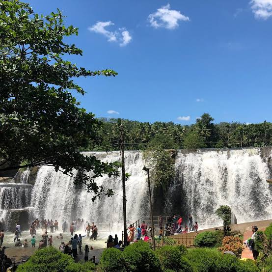
கோதையாற்றின் நீர் பாறை அமைப்பின் மீது விழுவதால் திருப்பரப்பு அருவி உருவாகிறது. கன்னியாகுமரி மாவட்டத்தின் முக்கியமான இயற்கைச் சுற்றுலாத் தலங்களில் இதுவும் ஒன்றாகும்.
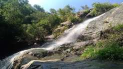
குட்லாடம்பட்டி அருவி மதுரை மாவட்டத்தின் முக்கியமான இயற்கைச் சுற்றுலாத் தலமாகும். மழைக்காலங்களில் இங்கு நீர்வரத்து அதிகரித்து அருவி சிறப்பாகக் காட்சியளிக்கும்.
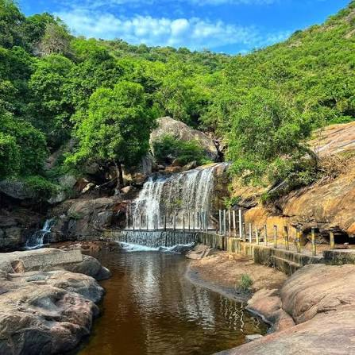
பஞ்சலிங்கம் அருவி மலைப்பகுதியில் அமைந்துள்ள இயற்கை அருவியாகும். மழைக்காலங்களில் நீர்வரத்து அதிகரித்து, சுற்றியுள்ள பசுமையான சூழலுடன் அழகிய காட்சியை உருவாக்குகிறது.
| எண் | அருவி | மாவட்டம் | முக்கியத்துவம் |
|---|---|---|---|
| 1 | ஒகேனக்கல் | தருமபுரி | காவிரி ஆற்றின் புகழ்பெற்ற அருவி |
| 2 | குற்றாலம் | தென்காசி | பல அருவிகள் கொண்ட முக்கிய சுற்றுலாத் தலம் |
| 3 | தலையாறு | திண்டுக்கல் | உயரமான அருவிச் சரிவு |
| 4 | ஆகாய கங்கை | நாமக்கல் | கொல்லிமலையின் முக்கிய அருவி |
| 5 | சுருளி | தேனி | மேற்கு தொடர்ச்சி மலை அருவி |
| 6 | கும்பக்கரை | தேனி | மலை அடிவார இயற்கை அருவி |
| 7 | சிறுவாணி | கோயம்புத்தூர் | காடு மற்றும் மலைச் சூழல் |
| 8 | கோவைக்குற்றாலம் | கோயம்புத்தூர் | கோயம்புத்தூரின் முக்கிய இயற்கைத் தலம் |
| 9 | கேத்தரின் | நீலகிரி | கோத்தகிரியின் முக்கிய அருவி |
| 10 | பைக்காரா | நீலகிரி | ஊட்டியின் புகழ்பெற்ற சுற்றுலாத் தலம் |
| 11 | மணிமுத்தாறு | திருநெல்வேலி | மேற்கு தொடர்ச்சி மலை அருவி |
| 12 | பாபநாசம் | திருநெல்வேலி | தாமிரபரணி ஆற்றுடன் தொடர்புடைய அருவிப் பகுதி |
| 13 | திருப்பரப்பு | கன்னியாகுமரி | கோதையாற்றின் புகழ்பெற்ற அருவி |
| 14 | குட்லாடம்பட்டி | மதுரை | மழைக்காலத்தில் சிறப்பாகக் காணப்படும் அருவி |
| 15 | பஞ்சலிங்கம் | திருப்பூர் | மலைப்பகுதி இயற்கை அருவி |
“மலையின் மடியில் பிறந்து, ஆறுகளுடன் இணைந்து, இயற்கையின் அழகையும் வாழ்வின் வளத்தையும் வழங்குவது — தமிழ்நாட்டின் அருவிகள்.”